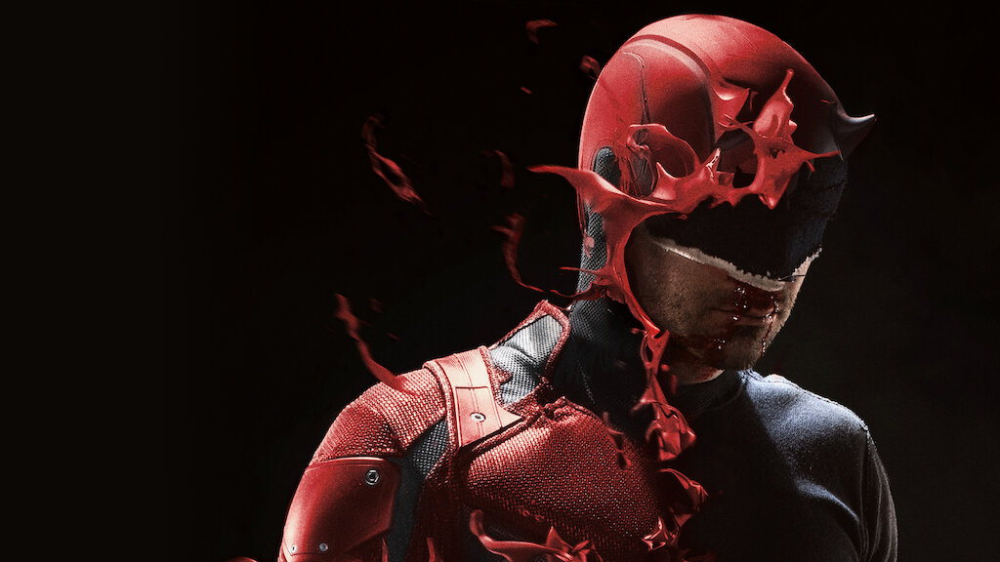

Daredevil
The devil of Hells Kitchen
La serie de Daredevil gira en torno a Matthew Murdock, un abogado de día y superhéroe de noche. A pesar de ser ciego, posee un oído, un olfato, una fuerza y una agilidad increíblemente desarrolladas. Sin descanso, Matthew Murdock recorrerá las calles de Nueva York a la caza de todo tipo de criminales a los que no puede castigar un tribunal.
